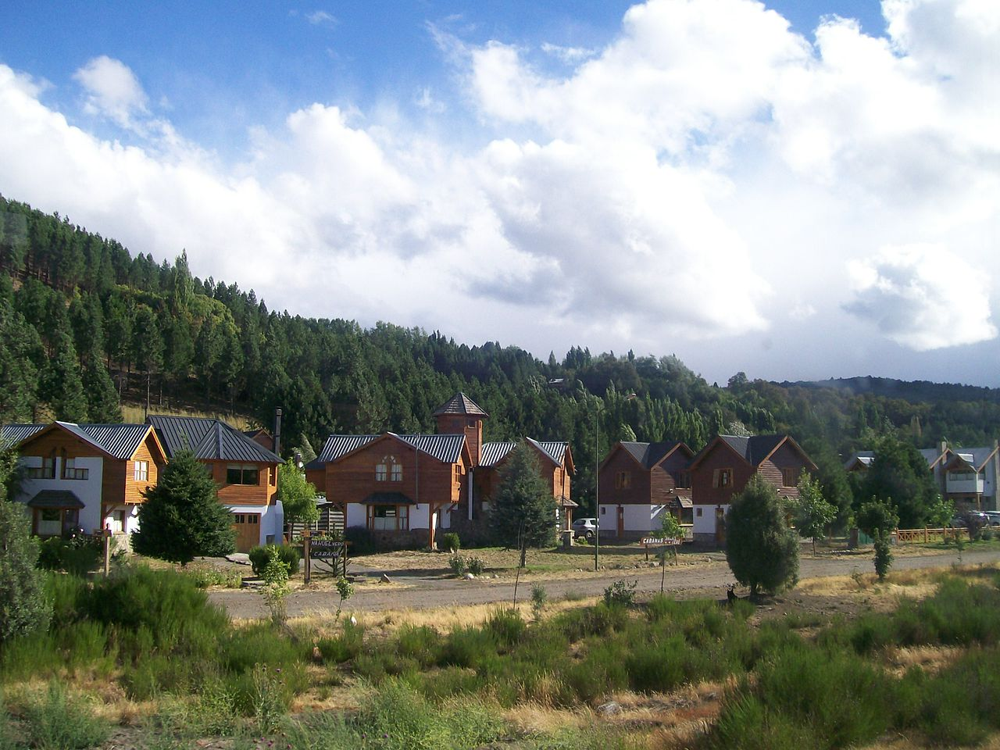
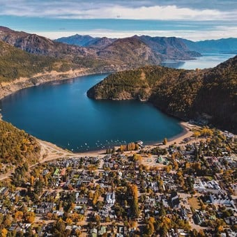

San Martín de los Andes
San Martín de los Andes es una ciudad, en el sudoeste de la provincia del Neuquén, enclavada en la Cordillera de los Andes, Argentina, sobre la costa este del lago Lácar, y es una localidad turística muy importante de la provincia del Neuquén. San Martín de los Andes es la cabecera del departamento Lácar, se encuentra a 640 m s. n. m. y a 1575 km de Buenos Aires.Es uno de los puntos turísticos más importantes de Argentina y de la región patagónica. Se accede por la Ruta Nacional 401 y posee un aeropuerto a 21,6 km del centro.

